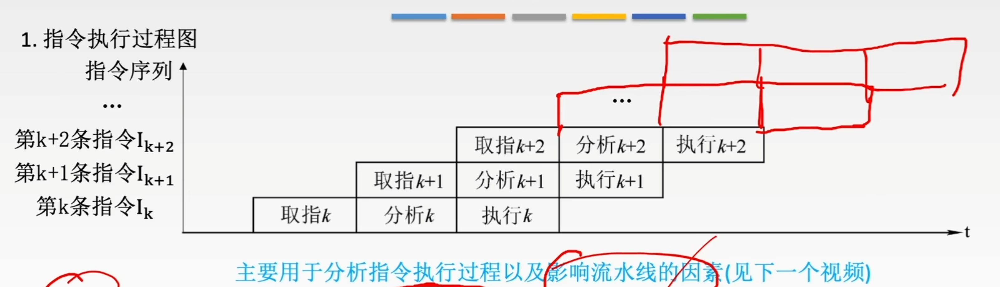

指令流水线
本文最后更新于 2024年11月1日 中午
指令流水线
指令流水
取值
分析
执行
顺序执行方式,传统的冯诺依曼机采用顺序执行方式,又称为串行执行方式
一次重叠执行方式
优点:执行时间缩短1/3,部件利用率提高
缺点:硬件上开销代价大,控制过程更为复杂
- 二次重叠执行方式
缩短近2/3(理想情况)
我们可以将指令执行分为四或五个阶段,并且每个阶段利用的部件相互独立,则可以让CPU实现同时运行四/五条指令
流水线的表示方法
- 指令执行过程图

- 时空图
性能标准
吞吐率:处理完成n个任务所用的时间为\(T_k\),\(TP=\frac{n}{T_K}\)
\(TP_{max}=\frac{1}{\Delta t}\)
\(0-k\Delta t\):装入时间
\(k\Delta t-(k+n-1)\Delta t\)
加速比:完成同样一批任务,不使用流水线所用的时间与所用流水线的时间之比
效率:流水线的设备利用率
\(n\rightarrow \infty时,E_{max}=1\)
影响因素
由经典MIPS架构提出的五阶段执行理念
五阶段:
- Instruction Fetch:取指令
- Instruction Decode:解码指令
- EXecute:执行指令
- Memory:访存
- Write Back:回写
为方便流水线的设计,将每个阶段的耗时取成一样,以最长耗时为准
为了保证各阶段之间数据的传递,我们在每个阶段之间需要增加一个缓冲寄存器(或称为锁存器),作用是保存本流水段的执行结果,提供给下一流水段使用
影响因素
- 结构相关(资源冲突)
- 数据相关(数据冲突)
- 控制相关(控制冲突)
结构相关
多条指令在同一时刻争用同一资源而形成的冲突称为结构相关
解决办法:
- 后一指令暂停一周期
- 资源重复配置:数据存储器+指令存储器
数据相关
在一个程序中,存在必须等前一条指令执行完才能执行后一条指令的情况
解决办法:
- 把遇到数据相关的指令及其后续指令都暂停一至几个时钟周期,直到数据相关问题消失后再继续执行,分为:
- 硬件阻塞
- 软件插入
NOP
- 数据旁路技术
- 编译优化:通过编译器调整指令顺序来解决数据相关
控制相关
当流水线遇到转移指令和其他改变PC值的指令而造成断流时,会引起控制相关
解决办法:
- 转移指令分支预测
- 预取转移成功和不成功两个控制流方向上的目标指令
- 加快和提前形成条件码
流水线的分类
- 部件功能级,处理机级,处理机间级流水线
- 单功能流水线和多功能流水线
- 静态流水线和动态流水线
集中式控制器
- 控制器只集中实现在ID阶段
- 控制器产生全部的译码信号
- 流水所有的译码信号,直到其不再需要为止
分布式控制器
- 控制器分布实现在多个流水线阶段
- 每级控制器只产生该级功能部件相关的译码信号
- 流水指令,作为各级控制器的输入
多发技术
- 超标量技术
- 每个时钟周期内可并发多条指令
- 要配置多个功能部件
- 不能调整指令的顺序
- 超流水技术
- 在一个时钟周期内再分段
- 在一个时钟周期内一个功能部件使用多次
- 不能调整指令的执行顺序
- 靠编译器解决优化问题
- 超长指令字